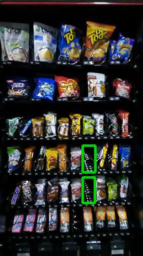
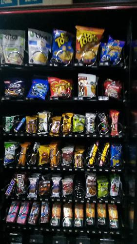

Antes de AbastecerSe detectaron 2 espirales vacios.

id 390.923 |
Luego de AbastecerNo se detectaron espirales vacios.

id 390.924 |
|
| Fecha |
Reporte |
Vacios ANT |
% Abast |
% Quiebre |
Sum QTY |
Rotación Diaria |
Abast hace (días) |
| 03-08-2021 |
Viendo |
2 |
3.8 |
5.0 |
32 |
4 |
7 |
| 27-07-2021 |
Ver |
8 |
22.4 |
20.0 |
190 |
27 |
7 |
| 20-07-2021 |
Ver |
0 |
5.5 |
0 |
47 |
9 |
5 |
| 15-07-2021 |
Ver |
0 |
9.1 |
0 |
77 |
38 |
2 |
| 13-07-2021 |
Ver |
1 |
4.6 |
2.5 |
39 |
7 |
5 |
| 08-07-2021 |
Ver |
0 |
11.1 |
0 |
94 |
47 |
2 |
|
|
|
Se abasteció la máquina con:
Total de 32 unidades de 3 productos.
| Qty. |
Producto |
SubFamilia |
Familia |
| 20 |
Negrita 20 Gr |
Bañados |
Snack |
| 6 |
Andifrut Naranja Tetra 20 |
Jugos |
Tetras |
| 6 |
Andifrut Durazno Tetra 20 |
Jugos |
Tetras |
| Productos más abastecidos en últimas 6 semanas:
| Nro. Abast |
Qty/Abast |
Producto |
Abast hace (días) |
Fecha |
| 15 |
8 |
Andifrut Durazno Tetra 20 |
0 |
03-08-2021 |
| 13 |
8 |
Andifrut Naranja Tetra 20 |
0 |
03-08-2021 |
| 11 |
7 |
Galleta Din Don 24Ux46Gr |
7 |
27-07-2021 |
| 8 |
10 |
Alfajor Bon O Bon Dos En |
7 |
27-07-2021 |
| 7 |
8 |
Leche Tetra Mono Chocolat |
7 |
27-07-2021 |
| Productos menos abastecidos en últimas 6 semanas:
| Nro. Abast |
Qty/Abast |
Producto |
Abast hace (días) |
Fecha |
| 1 |
12 |
Muibon Flow Chocolate 48G |
42 |
22-06-2021 |
| 2 |
5 |
Papas Fritas Tika Chiloe |
7 |
27-07-2021 |
| 2 |
5 |
Natur Arroz 50X20 Gr |
7 |
27-07-2021 |
| 2 |
5 |
Mini Selz 45 Gr |
14 |
20-07-2021 |
| 2 |
5 |
Galletas Limon Sin Azucar |
26 |
08-07-2021 |
|
|